Multivibradores
Lógica digital con realimentación
Con circuitos lógicos combinacionales y de puerta simple, existe un estado de salida definido para cualquier estado de entrada determinado. Tomemos, por ejemplo, la tabla de verdad de una puerta OR:
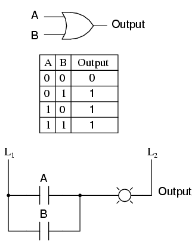
Para cada una de las cuatro combinaciones posibles de estados de entrada (0-0, 0-1, 1-0 y 1-1), hay un estado de salida definido e inequívoco. Ya sea que estemos tratando con una multitud de puertas en cascada o una sola puerta, ese estado de salida está determinado por las tablas de verdad para las puertas en el circuito, y nada más.
Sin embargo, si alteramos este circuito de puerta para dar retroalimentación de señal desde la salida a una de las entradas, comienzan a suceder cosas extrañas:
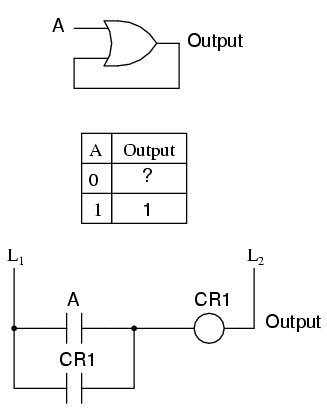
Sabemos que si A es 1, la salidadebeser 1, también. Tal es la naturaleza de una puerta OR: cualquier entrada "alta" (1) fuerza la salida "alta" (1). Sin embargo, si A es "bajo" (0), no podemos garantizar el nivel lógico o el estado de la salida en nuestra tabla de verdad. Dado que la salida se retroalimenta a una de las entradas de la puerta OR, y sabemos que cualquier entrada 1 a una puerta OR genera la salida 1, este circuito se "bloqueará" en el estado de salida 1 después de cualquier momento en que A sea 1. Cuando A es 0, la salida podría ser 0 o 1,¡Dependiendo del estado anterior del circuito!La forma correcta de completar la tabla de verdad anterior sería insertar la palabrapestilloen lugar del signo de interrogación, lo que muestra que la salida mantiene su último estado cuando A es 0.
Cualquier circuito digital que emplea retroalimentación se llamamultivibrador. El ejemplo que acabamos de explorar con la puerta OR fue un ejemplo muy simple de lo que se llamabiestablemultivibrador. Se llama "biestable" porque puede mantenerse estable en uno detwoposibles estados de salida, ya sea 0 o 1. También haymonoestablemultivibradores, que sólo tienenoneestado de salida estable (ese otro estado es momentáneo), que exploraremos más adelante; yastablemultivibradores, que no tienen un estado estable (oscilan hacia adelante y hacia atrás entre una salida de 0 y 1).
Un multivibrador astable muy simple es un inversor con la salida alimentada directamente a la entrada:
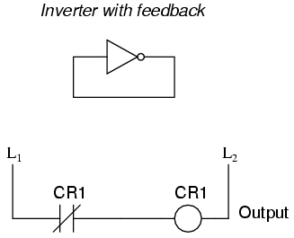
Cuando la entrada es 0, la salida cambia a 1. Esa salida 1 se retroalimenta a la entrada como un 1. Cuando la entrada es 1, la salida cambia a 0. Esa salida 0 se retroalimenta a la entrada como un 0 y el ciclo se repite. El resultado es un oscilador de alta frecuencia (varios megahercios), si se implementa con una puerta inversora de estado sólido (semiconductor):
Si se implementa con lógica de relé, el oscilador resultante será considerablemente más lento y realizará ciclos a una frecuencia dentro del rango de audio. Elzumbador or vibradorEl circuito así formado se usó ampliamente en los primeros circuitos de radio, como una forma de convertir energía CC constante de bajo voltaje en energía CC pulsante que luego podría aumentarse en voltaje a través de un transformador para producir el alto voltaje necesario para operar los amplificadores de válvulas de vacío. Los ingenieros de Henry Ford también emplearon el circuito de zumbador/transformador para crear un alto voltaje continuo para operar las bujías en los motores de automóviles Modelo T:
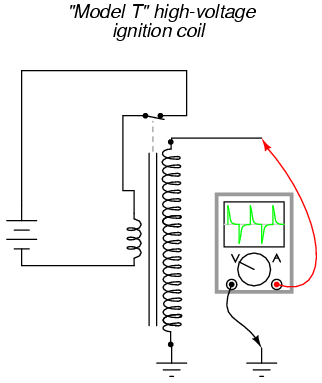
Tomando prestada la terminología de los antiguos circuitos mecánicos de zumbador (vibrador), los ingenieros de circuitos de estado sólido se referían a cualquier circuito con dos o más vibradores conectados entre sí como unmultivibrador. El multivibrador astable mencionado anteriormente, con un solo "vibrador", se implementa más comúnmente con múltiples puertas, como veremos más adelante.
Los multivibradores más interesantes y más utilizados son los biestables, por lo que ahora los exploraremos en detalle.
El latch S-R
Un multivibrador biestable tienetwoestados estables, como lo indica el prefijobien su nombre. Normalmente, un estado se denominasety el otro comoreiniciar. Por lo tanto, el dispositivo biestable más simple se conoce comoestablecer-restablecer, o S-R, pestillo.
Para crear un pestillo S-R, podemos cablear dos puertas NOR de tal manera que la salida de una realimente la entrada de la otra, y viceversa, así:
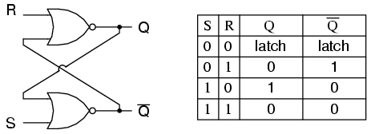
Se supone que las salidas Q y no Q están en estados opuestos. Digo "se supone que debe hacerlo" porque hacer que las entradas S y R sean iguales a 1 da como resultado que Q y no Q sean 0. Por esta razón, tener S y R iguales a 1 se llamainválido or ilegalEstado para el multivibrador S-R. De lo contrario, hacer S=1 y R=0 "configura" el multivibrador de modo que Q=1 y no Q=0. Por el contrario, hacer R=1 y S=0 "reinicia" el multivibrador en el estado opuesto. Cuando S y R son iguales a 0, las salidas del multivibrador se "bloquean" en sus estados anteriores. Observe cómo se puede implementar la misma función multivibrador en lógica de escalera, con los mismos resultados:
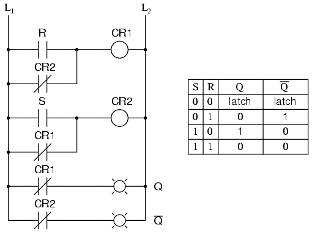
Por definición, una condición de Q=1 y no-Q=0 esset. Una condición de Q=0 y no-Q=1 esreiniciar. Estos términos son universales para describir los estados de salida de cualquier circuito multivibrador.
El observador astuto notará que la condición de encendido inicial del pestillo S-R, ya sea de puerta o de escalera, es tal que ambas puertas (bobinas) comienzan en el modo desenergizado. Como tal, uno esperaría que el circuito se iniciara en una condición no válida, con las salidas Q y no Q en el mismo estado. En realidad, ¡esto es cierto! Sin embargo, la condición no válida es inestable con las entradas S y R inactivas, y el circuito se estabilizará rápidamente ya sea en la condición de activación o de reinicio porque una puerta (o relé) seguramente reaccionará un poco más rápido que la otra. Si ambas compuertas (o bobinas) fueranexactamente idéntico, oscilarían entre alto y bajo como un multivibrador astable al encenderse sin alcanzar nunca un punto de estabilidad. Afortunadamente, en casos como este, una coincidencia tan precisa de componentes es una posibilidad poco común.
Debe tenerse en cuenta que, aunque una condición astable (oscilación continua) sería extremadamente rara, lo más probable es que se produzcan uno o dos ciclos de oscilación en el circuito anterior, y el estado final del circuito (establecido o reiniciado) después del encendido sería impredecible. La raíz del problema es unacondición de carreraentre los dos relés CR1y CR2.
Una condición de carrera ocurre cuando dos eventos mutuamente excluyentes se inician simultáneamente a través de diferentes elementos del circuito por una sola causa. En este caso, los elementos del circuito son relés CR.1y CR2, y sus estados desenergizados son mutuamente excluyentes debido a los contactos de enclavamiento normalmente cerrados. Si una bobina del relé está desenergizada, su contacto normalmente cerrado mantendrá la otra bobina energizada, manteniendo así el circuito en uno de dos estados (configurado o reiniciado). El enclavamiento evitaambosrelés se enganchen. Sin embargo, siambosLas bobinas del relé comienzan en sus estados desenergizados (como después de que todo el circuito se ha desenergizado y luego se enciende), ambos relés "correrán" para engancharse a medida que reciben energía (la "causa única") a través del contacto normalmente cerrado del otro relé. Uno de esos relés inevitablemente alcanzará esa condición antes que el otro, abriendo así su contacto de enclavamiento normalmente cerrado y desenergizando la otra bobina del relé. Qué relevo "gana" esta carrera depende de las características físicas de los relevos y no del diseño del circuito, por lo que el diseñador no puede garantizar en qué estado caerá el circuito después del encendido.
Las condiciones de carrera deben evitarse en el diseño del circuito principalmente por la imprevisibilidad que se creará. Una forma de evitar esta condición es insertar un relé de retardo en el circuito para desactivar uno de los relés competidores durante un breve período, dando al otro una clara ventaja. En otras palabras, al ralentizar intencionalmente la desenergización de un relevo, nos aseguramos de que el otro relevo siempre "ganará" y los resultados de la carrera siempre serán predecibles. A continuación se muestra un ejemplo de cómo se podría aplicar un relé de retardo al circuito anterior para evitar la condición de carrera:
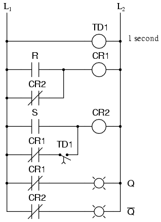
Cuando el circuito se enciende, el contacto del relé de retardo de tiempo TD1en el quinto peldaño retrasará el cierre durante 1 segundo. Tener ese contacto abierto durante 1 segundo evita que el relé CR2desde energización a través de contacto CR1en su estado normalmente cerrado después del encendido. Por lo tanto, relé CR1se le permitirá energizarse primero (con una ventaja de 1 segundo), abriendo así el CR normalmente cerrado1Contacto en el quinto peldaño, impidiendo CR2se energice sin que la entrada S se active. El resultado final es que el circuito se enciende de forma limpia y predecible en el estado de reinicio con S=0 y R=0.
Cabe mencionar que las condiciones de carrera no se limitan a los circuitos de relevos. Los circuitos de puerta lógica de estado sólido también pueden sufrir los efectos nocivos de las condiciones de carrera si se diseñan incorrectamente. Los programas informáticos complejos, de hecho, también pueden generar problemas raciales si no se diseñan correctamente. Los problemas de carrera son una posibilidad para cualquier sistema secuencial y es posible que no se descubran hasta algún tiempo después de la prueba inicial del sistema. Pueden ser problemas muy difíciles de detectar y eliminar.
Una aplicación práctica de un circuito de enclavamiento S-R podría ser para arrancar y detener un motor, utilizando contactos de interruptor de botón momentáneo normalmente abiertos para ambos.comenzar(Arenadetener(R) y luego energiza un contactor del motor con un CR1o CR2contacto (o usar un contactor en lugar de CR1o CR2). Normalmente, se emplea un circuito lógico de escalera mucho más simple, como este:
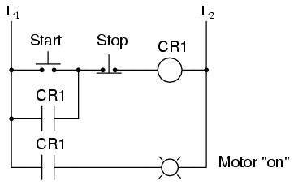
En el circuito de arranque/parada del motor anterior, el CR1contacto en paralelo con elcomenzarEl contacto del interruptor se conoce como contacto "sellado", porque "sella" o bloquea el relé de control CR.1en el estado energizado después delcomenzarSe ha soltado el interruptor. Para romper el "sello", o "desbloquear" o "restablecer" el circuito, eldetenerSe presiona el botón, lo que desenergiza el CR.1y restaura el contacto sellado a su estado normalmente abierto. Sin embargo, observe que este circuito realiza prácticamente la misma función que el pestillo S-R. También tenga en cuenta que este circuito no tiene ningún problema de inestabilidad inherente (aunque sea una posibilidad remota), al igual que el diseño del pestillo S-R de doble relé.
En forma de semiconductor, los pestillos S-R vienen en unidades empaquetadas para que no tenga que construirlos a partir de puertas individuales. Están simbolizados así:
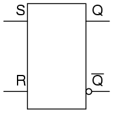
- REVISAR:
- A biestablemultivibrador es uno contwoestados de salida estables.
- En un multivibrador biestable, la condición de Q=1 y no-Q=0 se define comoset. Una condición de Q=0 y no-Q=1 se define a la inversa comoreiniciar. Si Q y no Q son forzados al mismo estado (ambos 0 o ambos 1), ese estado se denominainválido.
- En un pestillo S-R, la activación de la entrada S configura el circuito, mientras que la activación de la entrada R restablece el circuito. Si ambas entradas S y R se activan simultáneamente, el circuito estará en una condición no válida.
- A condición de carreraEs un estado en un sistema secuencial donde dos eventos mutuamente excluyentes son iniciados simultáneamente por una sola causa.
El latch S-R con habilitación
A veces es útil en circuitos lógicos tener un multivibrador que cambia de estado sólo cuando se cumplen ciertas condiciones, independientemente de sus estados de entrada S y R. La entrada condicional se llamapermitir, y está simbolizado por la letra E. Estudie el siguiente ejemplo para ver cómo funciona:
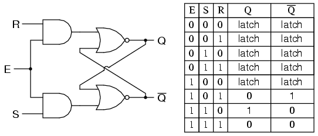
Cuando E = 0, las salidas de las dos puertas AND se fuerzan a 0, independientemente de los estados de S o R. En consecuencia, el circuito se comporta como si S y R fueran ambos 0, enclavando las salidas Q y no Q en sus últimos estados. Sólo cuando se activa la entrada de habilitación (1) el pestillo responderá a las entradas S y R. Tenga en cuenta la función idéntica en la lógica de escalera:
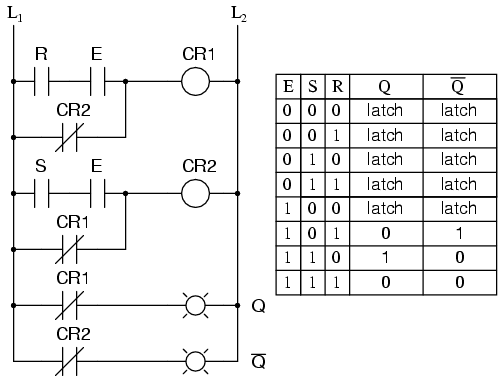
Una aplicación práctica de esto podría ser el mismo circuito de control del motor (con dos interruptores de botón normalmente abiertos paracomenzar y detener), excepto con la adición de una entrada de bloqueo maestro (E) que inhabilita que ambos botones tengan control sobre el motor cuando está bajo (0).
Una vez más, estos circuitos multivibradores están disponibles como dispositivos semiconductores preempaquetados y están simbolizados como tales:
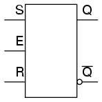
También es común ver la entrada de habilitación designada con las letras "EN" en lugar de solo "E".
- REVISAR:
- The permitirLa entrada en un multivibrador debe activarse para que las entradas S o R tengan algún efecto en el estado de salida.
- Esta entrada de habilitación a veces está etiquetada como "E" y otras veces como "EN".
El latch tipo D
Dado que la entrada de habilitación en un pestillo S-R cerrado proporciona una manera de bloquear las salidas Q y no Q sin tener en cuenta el estado de S o R, podemos eliminar una de esas entradas para crear un circuito de pestillo multivibrador sin estados de entrada "ilegales". Un circuito de este tipo se llama pestillo D y su lógica interna se ve así:
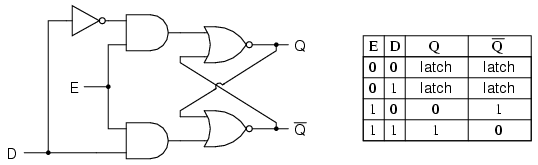
Tenga en cuenta que la entrada R se reemplazó con el complemento (inversión) de la antigua entrada S, y la entrada S pasó a llamarse D. Al igual que con el pestillo S-R cerrado, el pestillo D no responderá a una entrada de señal si la entrada de habilitación es 0; simplemente permanece bloqueado en su último estado. Sin embargo, cuando la entrada de habilitación es 1, la salida Q sigue a la entrada D.
Dado que se eliminó la entrada R del circuito SR, este pestillo no tiene un estado "inválido" o "ilegal". Q y no-Q sonsiempreopuestos uno del otro. Si el diagrama anterior resulta confuso, el siguiente diagrama debería simplificar el concepto:
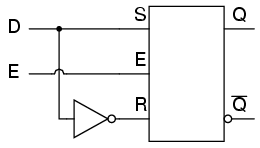
Al igual que los pestillos S-R y S-R con compuerta, el circuito de pestillo D se puede encontrar como su propio circuito preempaquetado, completo con un símbolo estándar:
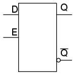
El pestillo D no es más que un pestillo S-R cerrado con un inversor agregado para hacer que R sea el complemento (inverso) de S. Exploremos el equivalente lógico de escalera de un pestillo D, modificado del diagrama de escalera básico de un pestillo S-R:
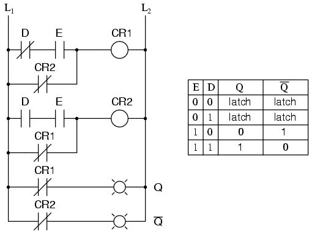
Una aplicación para el pestillo D es un circuito de memoria de 1 bit. Puede "escribir" (almacenar) un bit 0 o 1 en este circuito de bloqueo haciendo que la entrada de habilitación sea alta (1) y configurando D en el valor que desee que sea el bit almacenado. Cuando la entrada de habilitación se hace baja (0), el pestillo ignora el estado de la entrada D y retiene alegremente el valor del bit almacenado, generando el valor almacenado en Q, y su inverso en la salida no Q.
- REVISAR:
- Un pestillo D es como un pestillo S-R con una sola entrada: la entrada "D". Activar la entrada D configura el circuito y desactivar la entrada D reinicia el circuito. Por supuesto, esto es sólo si la entrada de habilitación (E) también está activada. De lo contrario, las salidas se bloquearán y no responderán al estado de la entrada D.
- Los pestillos D se pueden utilizar como circuitos de memoria de 1 bit, almacenando un estado "alto" o "bajo" cuando están deshabilitados y "leyendo" nuevos datos de la entrada D cuando están habilitados.
Edge-triggered latches: Flip-Flops
Hasta ahora, hemos estudiado circuitos de cierre S-R y D con entradas de habilitación. El pestillo responde a las entradas de datos (S-R o D) solo cuando se activa la entrada de habilitación. Sin embargo, en muchas aplicaciones digitales, es deseable limitar la capacidad de respuesta de un circuito de enclavamiento a un período de tiempo muy corto en lugar del tiempo total en que se activa la entrada de habilitación. Un método para habilitar un circuito multivibrador se llamadisparo por borde, donde las entradas de datos del circuito tienen control sólo durante el tiempo que la entrada de habilitación estátransiciónde un estado a otro. Comparemos los diagramas de tiempo de un pestillo D normal con uno que se activa por flanco:
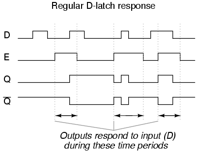
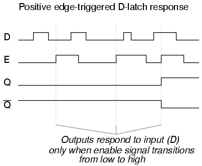
En el primer diagrama de tiempos, las salidas responden a la entrada D siempre que la entrada de habilitación (E) esté alta, durante el tiempo que permanezca alta. Cuando la señal de habilitación vuelve a un estado bajo, el circuito permanece bloqueado. En el segundo diagrama de tiempos, notamos una respuesta claramente diferente en las salidas del circuito: solo responde a la entrada D durante ese breve momento en que la señal de habilitacióncambios, otransiciones, de menor a mayor. Esto se conoce comopositivodisparo por borde.
Existe tal cosa comonegativotambién se dispara por flanco y produce la siguiente respuesta a las mismas señales de entrada:
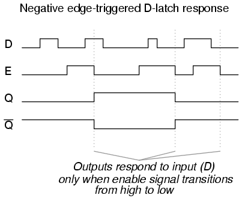
Siempre que habilitamos un circuito multivibrador en el borde de transición de una señal de habilitación de onda cuadrada, lo llamamoschanclasen lugar de unpestillo. En consecuencia, un circuito S-R disparado por flanco se conoce más propiamente como flip-flop S-R, y un circuito D disparado por flanco como flip-flop D. La señal de habilitación pasa a llamarserelojseñal. Además, nos referimos a las entradas de datos (S, R y D, respectivamente) de estos flip-flops comosincrónicoentradas, porque tienen efecto solo en el momento del flanco del pulso del reloj (transición), sincronizando así cualquier cambio de salida con ese pulso del reloj, en lugar de depender del capricho de las entradas de datos.
Pero, ¿cómo conseguimos realmente este desencadenamiento de límites? Crear un pestillo S-R "cerrado" a partir de un pestillo S-R normal es bastante fácil con un par de puertas AND, pero ¿cómo implementamos una lógica que solo preste atención a laflanco ascendente o descendentede una señal digital cambiante? Lo que necesitamos es un circuito digital que emita un breve pulso cada vez que la entrada se active durante un período de tiempo arbitrario, y podemos usar la salida de este circuito para habilitar brevemente el pestillo. Nos estamos adelantando un poco aquí, pero en realidad se trata de una especie de multivibrador monoestable, al que por ahora llamaremosdetector de pulso.
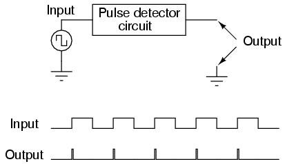
La duración de cada impulso de salida la establecen los componentes del propio circuito de impulsos. En lógica de escalera, esto se puede lograr con bastante facilidad mediante el uso de un relé de retardo con un tiempo de retardo muy corto:
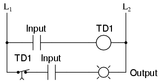
Implementar esta función de temporización con componentes semiconductores es bastante fácil, ya que aprovecha el retardo de tiempo inherente dentro de cada puerta lógica (conocido comoretraso de propagación). Lo que hacemos es tomar una señal de entrada y dividirla en dos partes, luego colocar una puerta o una serie de puertas en una de esas rutas de señal solo para retrasarla un poco, luego hacer que tanto la señal original como su contraparte retrasada entren en una puerta de dos entradas que emite una señal alta durante el breve momento en que la señal retrasada aún no ha alcanzado el cambio de bajo a alto en la señal no retrasada. A continuación se muestra un circuito de ejemplo para producir un pulso de reloj en una transición de señal de entrada de baja a alta:
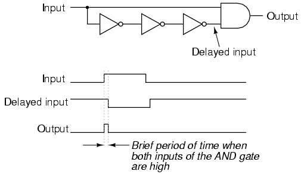
Este circuito se puede convertir en un circuito detector de pulsos de borde negativo con solo un cambio de la puerta final de AND a NOR:
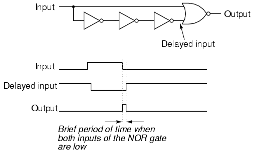
Ahora que sabemos cómo se puede fabricar un detector de pulso, podemos mostrarlo conectado a la entrada de habilitación de un pestillo para convertirlo en un flip-flop. En este caso, el circuito es un flip-flop S-R:
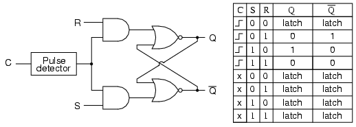
Solo cuando la señal de reloj (C) pasa de baja a alta el circuito responde a las entradas S y R. Para cualquier otra condición de la señal del reloj ("x"), el circuito se bloqueará.
Aquí se muestra una versión de lógica de escalera del flip-flop S-R:
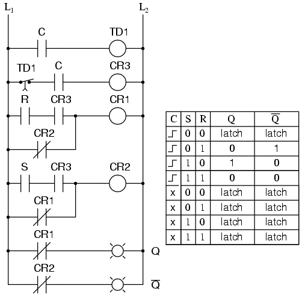
Contacto de relé CR3en el diagrama de escalera ocupa el lugar del antiguo contacto E en el circuito de bloqueo S-R y se cierra solo durante el breve tiempo en que C está cerrado y el contacto de retardo TR1está cerrado. En cualquier caso (circuito de puerta o de escalera), vemos que las entradas S y R no tienen ningún efecto a menos que C esté pasando de un estado bajo (0) a uno alto (1). De lo contrario, las salidas del flip-flop se bloquean en sus estados anteriores.
Es importante tener en cuenta que el estado no válido del flip-flop S-R se mantiene solo durante el corto período de tiempo que el circuito detector de pulso permite habilitar el pestillo. Después de que haya transcurrido ese breve período de tiempo, las salidas se bloquearán en el estado activado o reiniciado. Una vez más, el problema de unacondición de carrerase manifiesta. Sin señal de habilitación, no se puede mantener un estado de salida no válido. Sin embargo, los estados "bloqueados" válidos del multivibrador (configuración y reinicio) son mutuamente excluyentes entre sí. Por lo tanto, las dos puertas del circuito multivibrador "competirán" entre sí por la supremacía, y la que alcance primero un estado de alto rendimiento "ganará".
Los símbolos de bloque de los flip-flops son ligeramente diferentes de los de sus respectivos pestillos:
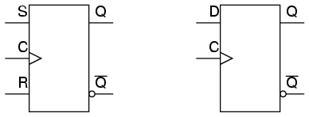
El símbolo del triángulo junto a las entradas del reloj nos indica que se trata de dispositivos activados por flanco y, en consecuencia, que son flip-flops en lugar de pestillos. Los símbolos anteriores se activan por flanco positivo: es decir, "cronometran" el flanco ascendente (transición de bajo a alto) de la señal de reloj. Los dispositivos activados por flanco negativo se simbolizan con una burbuja en la línea de entrada del reloj:
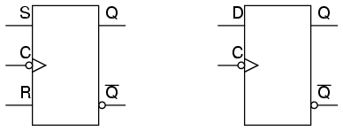
Los dos flip-flops anteriores "cronometrarán" el flanco descendente (transición de alto a bajo) de la señal de reloj.
- REVISAR:
- A chanclases un circuito de bloqueo con un circuito "detector de pulso" conectado a la entrada de habilitación (E), de modo que se habilita solo por un breve momento en el flanco ascendente o descendente de un pulso de reloj.
- Los circuitos detectores de impulsos pueden fabricarse a partir de relés de retardo de tiempo para aplicaciones de lógica de escalera o de puertas semiconductoras (aprovechando el fenómeno deretraso de propagación).
El flip-flop J-K
Otra variación del tema de los multivibradores biestables es el flip-flop J-K. Esencialmente, esta es una versión modificada de un flip-flop S-R sin estado de salida "no válido" o "ilegal". Mire de cerca el siguiente diagrama para ver cómo se logra esto:
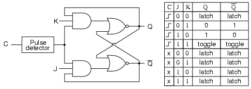
Lo que solían ser las entradas S y R ahora se llaman entradas J y K, respectivamente. Las antiguas puertas AND de dos entradas han sido reemplazadas por puertas AND de 3 entradas, y la tercera entrada de cada puerta recibe retroalimentación de las salidas Q y no Q. Lo que esto hace por nosotros es permitir que la entrada J tenga efecto sólo cuando se reinicia el circuito, y permitir que la entrada K tenga efecto sólo cuando se configura el circuito. En otras palabras, las dos entradas sonentrelazado, para usar un término lógico de relé, de modo que ambos no puedan activarse simultáneamente. Si el circuito está "configurado", la entrada J queda inhibida por el estado 0 de no Q a través de la puerta AND inferior; si el circuito se "reinicia", la entrada K queda inhibida por el estado 0 de Q a través de la puerta AND superior.
Sin embargo, cuando las entradas J y K son 1, sucede algo único. Debido a la acción de inhibición selectiva de esas compuertas AND de 3 entradas, un estado "configurado" inhibe la entrada J de modo que el flip-flop actúa como si J=0 mientras que K=1 cuando en realidad ambos son 1. En el siguiente pulso de reloj, las salidas cambiarán ("alternar") de configurado (Q=1 y no-Q=0) a reinicio (Q=0 y no-Q=1). Por el contrario, un estado de "reinicio" inhibe la entrada K de modo que el flip-flop actúa como si J=1 y K=0 cuando en realidad ambos son 1. El siguiente pulso de reloj conmuta nuevamente el circuito de reinicio a conjunto.
Vea si puede seguir esta secuencia lógica con el equivalente en lógica de escalera del flip-flop J-K:
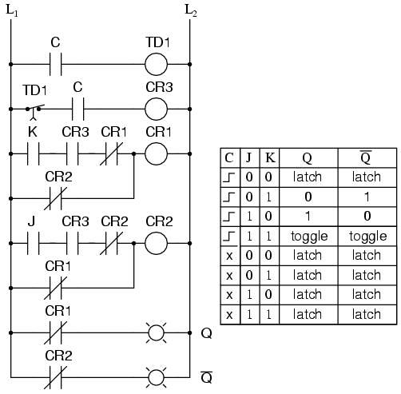
El resultado final es que se elimina el estado "no válido" del flip-flop S-R (junto con la condición de carrera que generó) y obtenemos una característica útil como beneficio adicional: la capacidad de alternar entre los dos estados de salida (biestables) con cada transición de la señal de entrada del reloj.
No existe un pestillo J-K, solo chanclas J-K. Sin la activación por flanco de la entrada del reloj, el circuito alternaría continuamente entre sus dos estados de salida cuando J y K se mantuvieran altos (1), lo que lo convertiría en un dispositivo astable en lugar de biestable en esa circunstancia. Si queremos preservar el funcionamiento biestable para todas las combinaciones de estados de entrada, debemosdebeuse el disparo por flanco para que cambie solo cuando se lo indiquemos, un paso (pulso de reloj) a la vez.
El símbolo de bloque de un flip-flop J-K es mucho menos aterrador que su circuito interno, y al igual que los flip-flops S-R y D, los flip-flops J-K vienen en dos variedades de reloj (activado por flanco positivo y negativo):
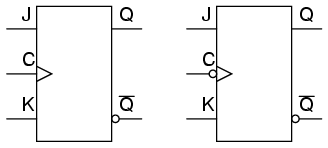
- REVISAR:
- Un flip-flop J-K no es más que un flip-flop S-R con una capa adicional de retroalimentación. Esta retroalimentación habilita selectivamente una de las dos entradas de configuración/reinicio para que ambas no puedan transportar una señal activa al circuito multivibrador, eliminando así la condición no válida.
- Cuando se activan las entradas J y K, y se pulsa la entrada del reloj, las salidas (Q y no Q) intercambiarán estados. Es decir, el circuitopalancadesde un estado establecido a un estado restablecido, o viceversa.
Entradas asíncronas de flip-flop
Las entradas de datos normales a un flip-flop (D, S y R, o J y K) se denominansincrónicoentradas porque tienen efecto en las salidas (Q y no Q) solo en paso o en sincronización con las transiciones de la señal del reloj. Estos aportes adicionales que ahora les traigo a su atención se llamanasincrónicoporque pueden configurar o restablecer el flip-flop independientemente del estado de la señal del reloj. Normalmente se les llamaprogramar y claro:
Cuando se activa la entrada preestablecida, el flip-flop se configurará (Q=1, no Q=0) independientemente de cualquiera de las entradas síncronas o del reloj. Cuando se activa la entrada de borrado, el flip-flop se restablecerá (Q=0, no Q=1), independientemente de cualquiera de las entradas síncronas o del reloj. Entonces, ¿qué sucede si se activan las entradas preestablecidas y claras? Sorpresa, sorpresa: obtenemos un estado no válido en la salida, donde Q y no Q van al mismo estado, ¡igual que nuestro viejo amigo, el pestillo S-R! Las entradas preestablecidas y claras se utilizan cuando se agrupan varios flip-flops para realizar una función en una palabra binaria de varios bits, y se necesita una sola línea para configurarlos o restablecerlos todos a la vez.
Las entradas asíncronas, al igual que las entradas síncronas, se pueden diseñar para que sean activas altas o activas bajas. Si están activos en nivel bajo, habrá una burbuja invertida en ese cable de entrada en el símbolo del bloque, al igual que las entradas de reloj de disparo por flanco negativo.
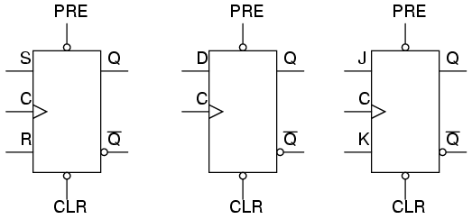
A veces, las designaciones "PRE" y "CLR" se mostrarán con barras de inversión encima, para denotar aún más la lógica negativa de estas entradas:
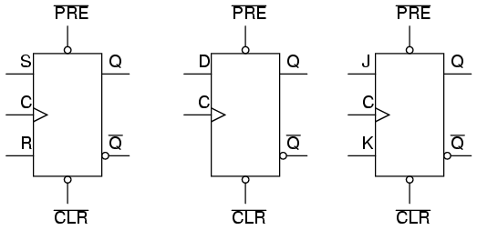
- REVISAR:
- AsincrónicoLas entradas de un flip-flop tienen control sobre las salidas (Q y no Q) independientemente del estado de la entrada del reloj.
- Estas entradas se denominanprogramar(PRE) yclaro(CLR). La entrada preestablecida lleva el flip-flop a un estado establecido mientras que la entrada clara lo lleva a un estado de reinicio.
- Es posible llevar las salidas de un flip-flop J-K a una condición no válida utilizando las entradas asíncronas, porque se anula toda la retroalimentación dentro del circuito multivibrador.
Monostable multivibrators
Ya hemos visto un ejemplo de multivibrador monoestable en uso: el detector de pulso usado dentro del circuito de flip-flops, para habilitar la parte del pestillo por un breve tiempo cuando la señal de entrada del reloj pasa de bajo a alto o de alto a bajo. El detector de impulsos se clasifica como multivibrador monoestable porque sólo tieneoneestado estable. Porestable, me refiero a un estado de salida en el que el dispositivo puede bloquearse o mantenerse indefinidamente, sin necesidad de estímulos externos. Un pestillo o flip-flop, al ser un dispositivo biestable, puede mantenerse en estado "establecido" o "reiniciado" durante un período de tiempo indefinido. Una vez configurado o reiniciado, continuará enclavándose en ese estado a menos que una entrada externa le indique que cambie. Un dispositivo monoestable, por otro lado, sólo es capaz de mantenerse en un estado particular de forma indefinida. Su otro estado sólo puede mantenerse momentáneamente cuando lo activa una entrada externa.
Una analogía mecánica de un dispositivo monoestable sería un interruptor de botón de contacto momentáneo, que regresa por resorte a su posición normal (estable) cuando se elimina la presión del actuador de botón. Asimismo, un interruptor de pared estándar (de palanca), como el que se utiliza para encender y apagar las luces en una casa, es un dispositivo biestable. Puede bloquearse en uno de dos modos: encendido o apagado.
Todos los multivibradores monoestables soncronometradodispositivos. Es decir, su estado de salida inestable se mantendrá sólo durante un período mínimo de tiempo antes de volver a su estado estable. Con los circuitos semiconductores monoestables, esta función de sincronización generalmente se logra mediante el uso de resistencias y capacitores, aprovechando las velocidades de carga exponencial de los circuitos RC. A menudo se utiliza un comparador para comparar el voltaje a través del condensador de carga (o descarga) con un voltaje de referencia constante, y la salida de encendido/apagado del comparador se usa para una señal lógica. Con la lógica de escalera, los retardos de tiempo se logran con relés de retardo de tiempo, que pueden construirse con circuitos semiconductores/RC como el que acabamos de mencionar, o dispositivos de retardo mecánicos que impiden el movimiento inmediato de la armadura del relé. Tenga en cuenta el diseño y funcionamiento del circuito detector de impulsos en lógica de escalera:
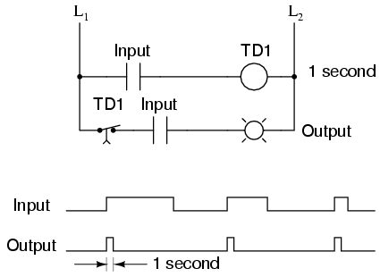
No importa cuánto tiempo la señal de entrada permanezca alta (1), la salida permanece alta durante solo 1 segundo y luego regresa a su estado bajo normal (estable).
Para algunas aplicaciones, es necesario tener un dispositivo monoestable que emita un pulso más largo que el pulso de entrada que lo activa. Considere el siguiente circuito lógico en escalera:
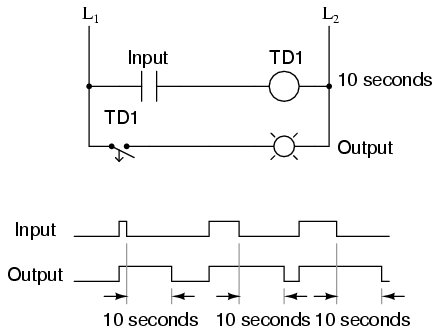
Cuando el contacto de entrada se cierra, TD1El contacto se cierra inmediatamente y permanece cerrado durante 10 segundos después de que se abre el contacto de entrada. No importa qué tan corto sea el pulso de entrada, la salida permanece alta (1) durante exactamente 10 segundos después de que la entrada vuelve a bajar. Este tipo de multivibrador monoestable se llamaun solo disparo. Más específicamente, es unreactivableone-shot, porque el tiempo comienza después de que la entrada cae a un estado bajo, lo que significa que múltiples pulsos de entrada con una diferencia de 10 segundos entre sí mantendrán una salida alta continua:
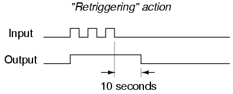
Una aplicación para un one-shot redisparable es la de un antirrebote de contacto mecánico único. Como puede ver en el diagrama de tiempos anterior, la salida permanecerá alta a pesar del "rebote" de la señal de entrada desde un interruptor mecánico. Por supuesto, en un circuito antirrebote de interruptor de la vida real, probablemente querrás usar un retardo de tiempo de duración mucho más corta que 10 segundos, ya que solo necesitas "antirrebotar" pulsos que estén en el rango de milisegundos.
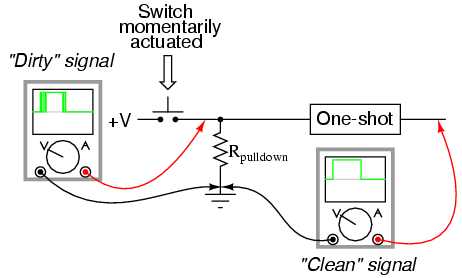
¿Qué pasaría si solo quisiéramos una salida de pulso temporizado de 10 segundos desde un circuito lógico de relé?a pesar de todo¿Cuántos pulsos de entrada recibimos o qué tan duraderos pueden ser? En ese caso, tendríamos que acoplar un circuito detector de pulso al circuito de retardo de tiempo de un disparo reactivable, como este:
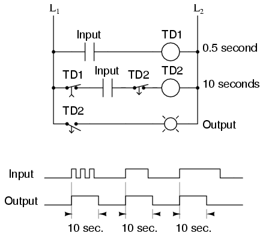
Relé temporizado TD1proporciona un pulso de "encendido" a la bobina del relé de retardo de tiempo TD2durante un momento arbitrariamente corto (en este circuito, durante al menos 0,5 segundos cada vez que se acciona el contacto de entrada). Tan pronto como TD2está energizado, el TD normalmente cerrado y temporizado2el contacto en serie evita que la bobina TD2de ser reenergizado mientras se agote el tiempo (10 segundos). Esto efectivamente hace que no responda a más pulsaciones del interruptor de entrada durante ese período de 10 segundos.
Sólo después de TD2El tiempo de espera del TD normalmente cerrado y cerrado temporizado2contacto en serie con él permite que la bobina TD2para volver a tener energía. Este tipo de one-shot se llamano reactivableun solo disparo.
Los multivibradores de un solo disparo, tanto de la variedad reactivable como no reactivable, encuentran una amplia aplicación en la industria para el accionamiento de sirenas y la secuenciación de máquinas, donde una señal de entrada intermitente produce una señal de salida de un tiempo determinado.
- REVISAR:
- A monoestableEl multivibrador tiene solo un estado de salida estable. El otro estado de salida sólo se puede mantener temporalmente.
- Multivibradores monoestables, a veces llamadosone-shots, vienen en dos variedades básicas:reactivable y no reactivable.
- Se pueden utilizar circuitos de un solo disparo con ajustes de tiempo muy cortos pararebotelas señales "sucias" creadas por los contactos del interruptor mecánico.
Lecciones en circuitos eléctricoscopyright (C) 2000-2023 Tony R. Kuphaldt, según los términos y condiciones delCC BY License.